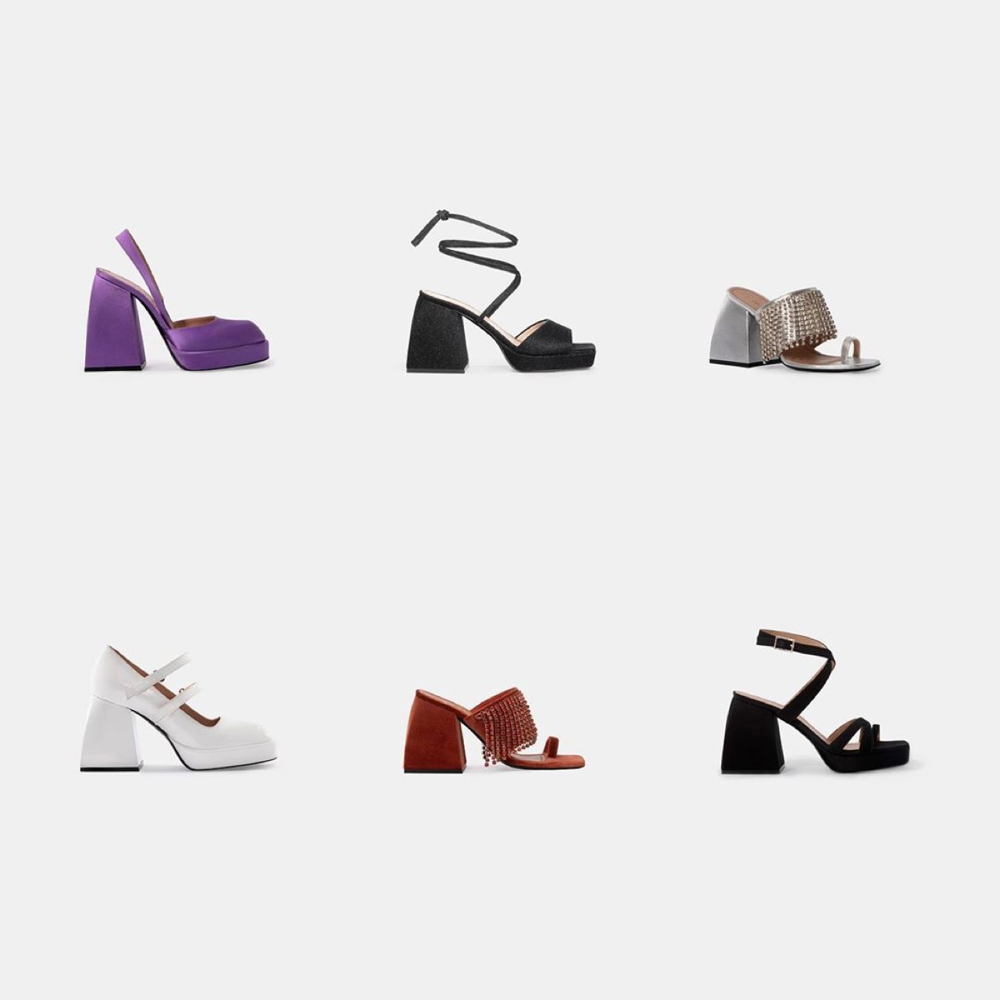

Digital painting employs software and digital input devices to create images using techniques analogous to traditional painting media while leveraging computational capabilities to enable unprecedented speed, flexibility, and creative possibility. Contemporary digital painting tools permit artists to simulate oil painting, watercolor, acrylic, and numerous other traditional media while introducing possibilities unique to digital creation. The non-destructive nature of digital painting—permitting unlimited revision and experimentation without material consequences—fundamentally alters creative processes and permits artists to work more experimentally and iteratively than traditional media allow. Digital painting has become mainstream artistic practice, with professional illustrators, fine artists, and commercial practitioners employing digital approaches to achieve results comparable or superior to traditional media.
These Shoes Were Inspire by Furniture Design and Architecture
